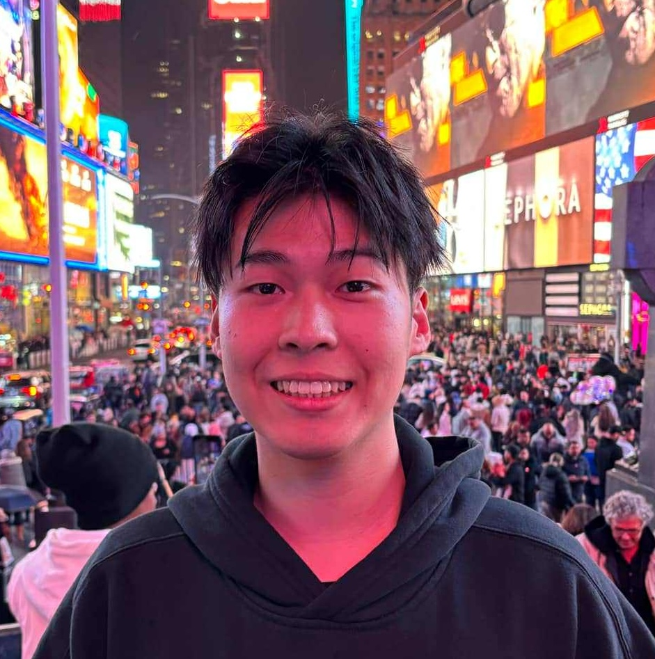
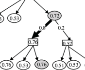
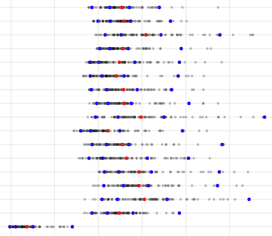
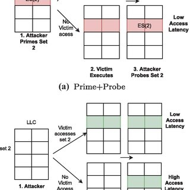
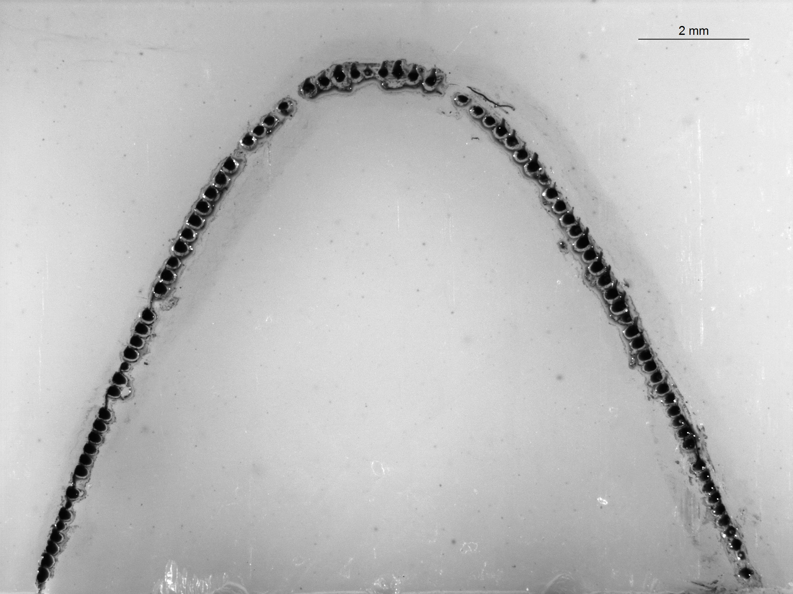
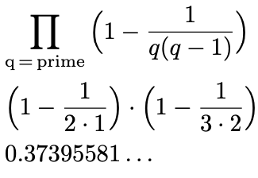

|
Marcus Lai I'm an undergraduate student at the University of British Columbia doing an Honours in Computer Science. Throughout my degree, I've worked with professor Eric Cytrynbaum in mathematical modelling and at UBC's Systopia Computer Systems lab where I was involved in 3 projects: Cache Side-channel in Serverless Applications with professor Aastha Mehta, GOSDT with Weights with professor Margo Seltzer, and Error detection in the Linux Kernel with eBPF with professor Thomas Pasquier. I'm currently in my final year doing an undergraduate thesis with professor Bruce Shepherd on improving approximation algorithms for multicommodity network flows. |
 |
{kind=link}
ResearchI'm interested in complexity theory and applied algorithms on the whole. My goal is to work at the intersection of algorithms and computer systems to design and implement efficient and practical algorithms. *: equal contribution |

|
Error Detection in the Linux Kernel with eBPF
Marcus Lai, Soo Yee Lim, Thomas Pasquier NSERC USRA 2025 at UBC Systopia report / presentation Extending and automating error detection with eBPF in the Linux Kernel. |
|

|
Optimal Cost-sensitive Decision Trees - GOSDT with Weights
UBC Systopia, in collaboration with Duke's Interpretable ML Lab Marcus Lai, Hayden McTavish, Margo Seltzer report (draft) An extension of UBC Systopia's Optimal Decision Tree solver to include feature costs. |
|

|
Bi-Level Heuristic for Decision Trees
in collaboration with phD student Chenxuanyin Zou github Accelerating the CART algorithm by pruning in linear and binary-search order, to be used within the novel heuristic algorithm. |
|

|
Cache Sidechannel Attacks on Serverless Architecture
NSERC USRA 2024 at UBC Systopia Ngoc Bui*, Marcus Lai*, Aiden Shields*, Yayu Wang, Aastha Mehta report (draft) / presentation Reverse-engineering undocumented structures (cache directory) in the Intel Icelake architecture with non-inclusive cache. |

|
Modelling Chirality in 4-cell stage of C. Elegans
NSERC USRA 2023 Marcus Lai, Eric Cytrynbaum model report / github An ODE model simulating embryonic development of C.elegans at the 4-cell stage. |
|

|
Automating Gecko Tooth Detection
NSERC USRA 2023 Marcus Lai, Eric Cytrynbaum github An image processing pipeline using OpenCV to analyze reptile bite-prints. |
|

|
Generalizations of Artin's Conjecture
PIMS VXML Khaled Hamdy Elgohary*, Marcus Lai*, Chi Hoi Yip, Greg Martin report / poster / github Analytically and numerically reinforcing generalized versions of Artin's conjecture in Number Theory. My observations led to the discovery of a closed-form formula to compute the prime densities, cited here. |
Miscellanea |
Music |
I love music. |